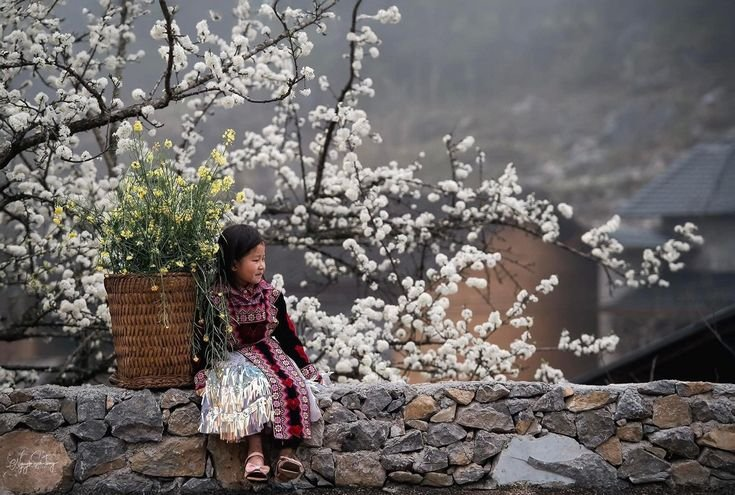
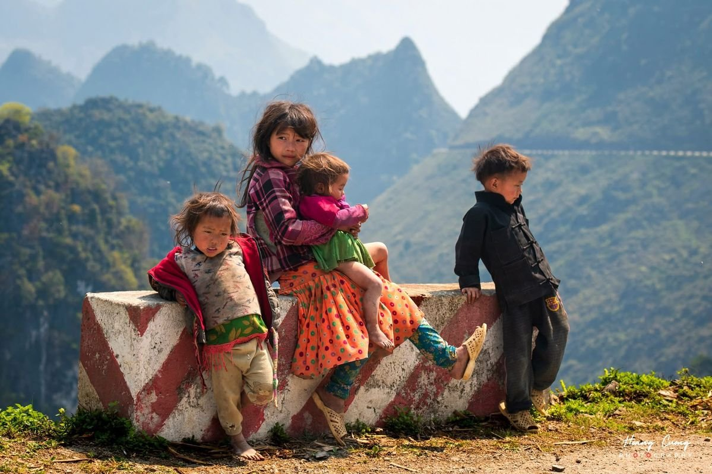

Món ăn mùa đông của em
Mèn mén, thắng cố, bắp ngô nướng ấm lòng giữa sương núi

Mùa đông tràn về trên đỉnh núi, mang theo những đợt gió rét thấu xương bám chặt lấy lớp ván thưng nhà sàn và những dải sương muối trắng xoá ngoài nương ngô. Trong cái lạnh buốt bàn chân của trẻ em vùng cao, những món ăn giữ nhiệt dân dã như bát mèn mén dẻo bùi, chảo thắng cố nghi ngút khói hay bắp ngô nướng xém than bên bếp lửa đã mang lại hơi ấm cho cái bụng xót xa và đơm đầy ký ức tuổi thơ cho mùa giá rét của bà con bản làng.
Hương vị giữ nhiệt nơi lưng chừng mây: Mèn mén bùi ngậy và bắp ngô nướng giòn rụm
Với lũ trẻ miền núi chúng em, mùa đông sương muối không gắn liền với những thức quà đắt tiền, mà bắt đầu từ vị ngọt bùi của hạt ngô nương chín tới.
Mèn mén - món ăn mà người dưới xuôi vẫn gọi là "cơm ngô" chính là linh hồn giữ nhiệt trong mỗi bữa ăn mùa đông. Ngô hạt sau khi thu hoạch trên nương đá dốc được phơi khô, nghiền nhỏ rồi đem đồ trên chõ gỗ hai lần. Bát mèn mén tơi xốp, thơm nức mùi ngô tẻ, khi ăn cùng thìa canh rau cải mèo đắng nhẹ hay chút nước canh ớt cay xè sẽ tỏa ra hơi ấm rần rật khắp lồng ngực. Chỉ cần một vắt mèn mén chắc nịch trong tay trước khi tới trường, gò má nứt nẻ vì gió rét của chúng em dường như bớt xót gắt hơn.
Những chiều đông muộn khi sương mù tràn qua khe cửa, thức quà khiến lũ trẻ thèm muồng nhất lại là những bắp ngô nướng than hồng. Bắp ngô tẻ nương hạt mẩy, cắm vào que nứa rồi hơ trên vạt than đỏ tí tách. Mùi thơm cháy xém ngào ngạt quyện vào khói bếp, ngón tay nhỏ xíu vừa chuyền tay nhau bắp ngô nóng hổi vừa bẻ từng hạt nhai dẻo ngọt. Vệt than đen bám trên má, tiếng cười rúc rích hòa cùng tiếng củi nứa nổ đốp bớt đi cái heo hút của miền núi mùa giá rét.
Thắng cố nghi ngút khói và nếp nhà chuẩn bị thực phẩm dự trữ cho mùa giá rét

Vào những ngày chợ phiên hay lúc bản làng vào đợt rét đậm nhất, chảo thắng cố nghi ngút khói chính là điểm hẹn ấm áp nhất của người vùng cao. Mùi thơm đặc trưng của thảo quả, củ sả, hoa hồi, mắc khén cùng vị béo ngậy của thịt ninh kỹ trong chảo gang lớn làm bừng sáng cả một góc chợ. Trẻ em theo mẹ đi chợ phiên, được ăn bát thắng cố nóng hổi, húp ngụm nước dùng đậm đà cay nồng, mồ hôi rịn ra trên trán là bao cái lạnh của chặng đường dốc núi tan biến hết.
◆ ◆ ◆
Tin liên quan
Xem thêm » Tiếng khèn đêm đông: Ngôn ngữ không lời của núi rừng sưởi ấm tuổi thơ vùng cao
Tiếng khèn đêm đông: Ngôn ngữ không lời của núi rừng sưởi ấm tuổi thơ vùng cao Mùa đông - Mùa bà dạy em thêu hoa trên vải: Nhịp chỉ gieo ước mơ nơi lưng chừng mây
Mùa đông - Mùa bà dạy em thêu hoa trên vải: Nhịp chỉ gieo ước mơ nơi lưng chừng mây Mùi trà Shan Tuyết và chè dây: Nhấp ngụm thanh khiết giữa sương giăng sưởi ấm mùa đông vùng cao
Mùi trà Shan Tuyết và chè dây: Nhấp ngụm thanh khiết giữa sương giăng sưởi ấm mùa đông vùng cao
Hành trình của chiếc áo nỉ chuyền tay qua 4 anh em: Vệt màu đỏ sưởi ấm mùa đông vùng cao Gia tài của thanh củi khô: Ngọn lửa sưởi ấm đôi má em giữa đêm rét vùng cao
Gia tài của thanh củi khô: Ngọn lửa sưởi ấm đôi má em giữa đêm rét vùng cao